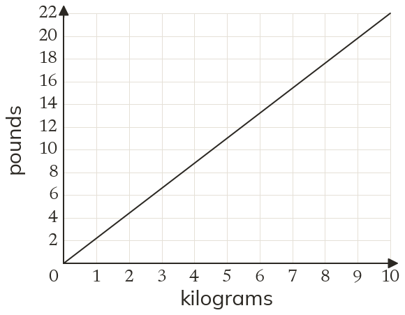
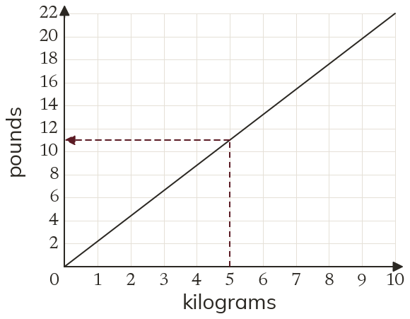
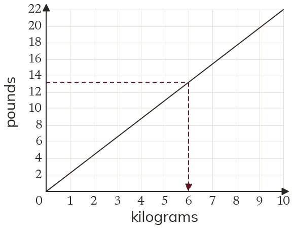

Westonbirt Maths · Speed-Time Graphs and Area
Conversion Graphs
Name: ______________________ Date: ____________
1
The graph converts kilograms (kg) to pounds (lb). Use it to convert kg to pounds.
2
Use the graph to convert lb to kilograms.
3
The graph stops at kg. Convert kg to pounds.
4
Is kg more or less than lb?
5
Why does the line pass through ?
Ext
Find the number of pounds in kg. Use it to convert kg to pounds.


